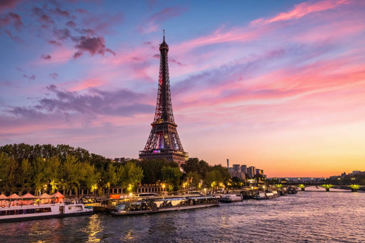
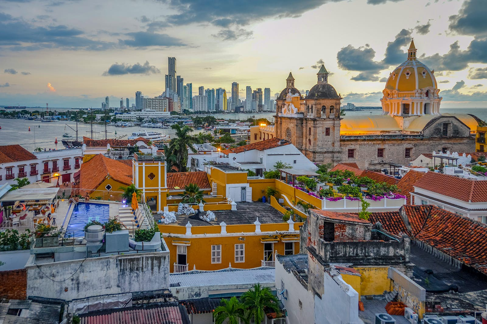
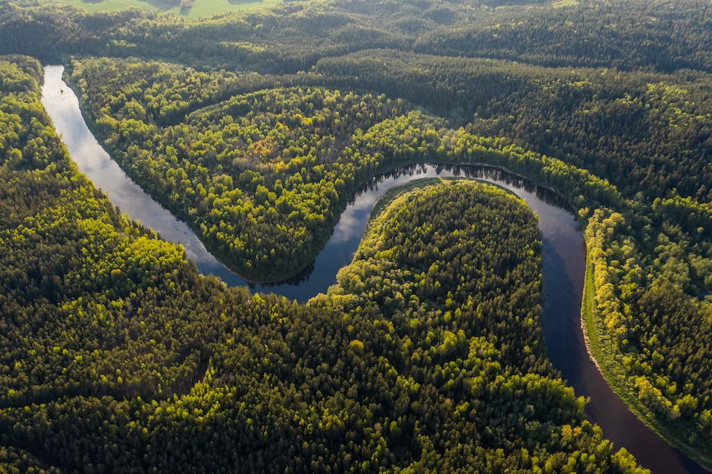

Paris
París, la ville de la Lumiere, la ciudad de la luz, es la capital turística del mundo. Y si Francia es el principal país turístico del mundo se debe en buena parte a la historia, a los monumentos y al aura de París.
Esta ciudad de orígenes romanos, Lutecia, se ha convertido gracias a los franceses, pero sobre todo a los extranjeros, en el referente mundial del buen gusto, de la cultura y de la libertad. Como en todo hay exageración, pero cierto es que la ciudad cumple en buena medida las expectativas que desde todo el mundo se han ido creando.

Cartagena
Cartagena de Indias, oficialmente Distrito Turístico y Cultural de Cartagena de Indias , es un distrito colombiano, desde 1991. Ubicada a orillas del mar Caribe. Fue fundada el 1 de junio de 1533 por Pedro de Heredia. Capital del departamento de Bolívar. Su centro histórico, llamada «Ciudad Amurallada», fue declarado Patrimonio Nacional de Colombia en 1959 y por la Unesco como Patrimonio de la Humanidad en 1984.Con el tiempo, Cartagena ha desarrollado su zona urbana conservando el centro histórico y convirtiéndose en uno de los célebre destino turístico de mayor importancia de Colombia y del Caribe.

Venecia
Venecia es una ciudad ubicada en el noreste de Italia. Es también la capital de la región véneta y de la provincia de Venecia. Su centro histórico, declarado Patrimonio de la Humanidad por la Unesco, está situado en un conjunto de islas en la laguna de Venecia, en el norte del mar Adriático. Su particularidad geográfica, así como su milenaria historia y su riquísimo patrimonio monumental y artístico, han hecho de Venecia uno de los destinos turísticos más impactantes y populares del mundo.

Islandia
Islandia también denominada República de Islandia, es un país insular europeo, cuyo territorio abarca la isla homónima y algunas pequeñas islas e islotes adyacentes en el océano Atlántico. Su capital es Reikiavik. Cuenta con una población de cerca de 366 425 habitantes y un área de 103 000 km². A causa de su localización en la dorsal mesoatlántica, es un país con gran actividad volcánica y geológica, factor que afecta en gran medida al paisaje del territorio islandés. El interior del país consiste en una meseta caracterizada por desiertos, montañas, glaciares y ríos glaciales que fluyen hacia el mar a través de las tierras bajas. Gracias a los efectos de la corriente del Golfo, tiene un clima templado, en relación con su latitud, y provee un entorno habitable.

Rio Amazonas
El río Amazonas es un río de América del Sur que atraviesa Perú (nacimiento), Colombia y Brasil (desembocadura). Es el río más largo y caudaloso del mundo, y contiene más agua que el Nilo, el Yangtsé y el Misisipi juntos, suponiendo cerca de una quinta parte del agua dulce en estado líquido del planeta. El Amazonas, que tiene la cuenca hidrográfica más grande en el mundo, alrededor de 7.4 millones de kilómetros cuadrados, representa aproximadamente la quinta parte del caudal fluvial del planeta. De hecho, este río tiene la mayor cuenca hidrográfica del mundo incluso contando únicamente la región que atraviesa Brasil, que supone la quinta parte de su volume. Estudios realizados por investigadores brasileños y peruanos en 2007 y 2008 apuntaban a que era el río de mayor longitud. En el año 2010, finalmente, se confirmó que era el río más largo del mundo, con 7062 km de longitud desde su nacimiento en la Quebrada de Apacheta, región de Arequipa, Perú.
